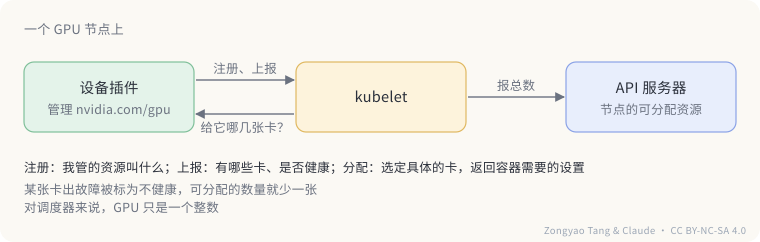
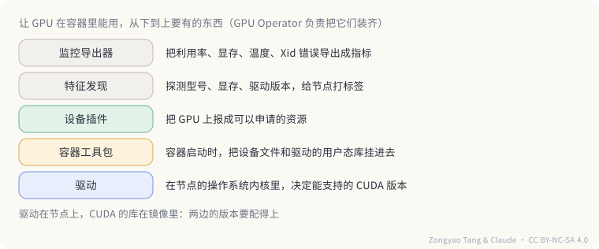
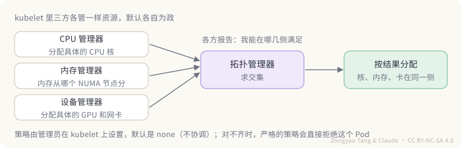
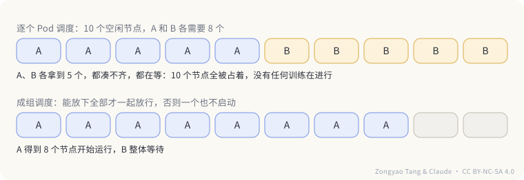
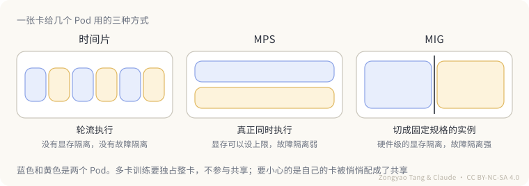

线索是：Kubernetes 本身不认识 GPU，要靠一个插件把它上报成资源 → 让 GPU 在容器里能用，需要一整套组件，GPU Operator 负责装齐 → “给哪张卡”这个决定分两层：一台机器之内要对齐 NUMA，机器之间要考虑网络拓扑 → 训练作业要的是一整组卡，缺一张都没用，这就需要成组调度和排队 → 最后看卡不够分时的两种办法：共享和抢占。前面第 5、7 部分反复说“位置决定性能”，这一单元讲位置是谁、怎样决定的。
第 8 部分 · 集群与平台（选读）8.2 GPU 在集群里：设备、调度与排队
这一单元回答Kubernetes 怎么知道一台机器上有几张 GPU？很多人抢卡时谁先用？
承接 8.1，并回到第 5 部分：调度时把一个作业的卡放在哪里，直接决定它的通信走哪些链路。
- 设备插件：把 GPU 上报成可以申请的整数资源
- GPU Operator：把让 GPU 在容器里能用的一整套组件装齐
- 卡放在哪：节点内对齐 NUMA，节点间考虑网络拓扑
- 成组调度与排队：要么全给，要么不给
- 卡不够分时：共享一张卡的三种方式，以及抢占
讲解
1设备插件：把 GPU 上报成可以申请的整数资源
Kubernetes 本身只认识 CPU 和内存。GPU 这类设备靠“设备插件”接入：每个节点上运行一个插件，告诉 kubelet“这台机器有 8 个 nvidia.com/gpu”。之后 GPU 就成了一种可以在 Pod 里申请的资源，但只能按整数申请，不能超额分配。Pod 被调度到节点后，由插件决定具体给它哪几张卡。
插件做的三件事。
- *注册。* 插件启动后向本机的 kubelet 登记：我管理的资源叫
nvidia.com/gpu。 - *上报。* 列出这个节点上有哪些设备、各自是否健康。kubelet 把总数作为节点的可分配资源报给 API 服务器。某张卡出了故障（比如 5.1 讲的 Xid 错误），插件把它标为不健康，可分配的数量就少一张。
- *分配。* 一个申请了 GPU 的 Pod 被调度到这个节点时，kubelet 问插件“给它哪几个设备”。插件选定具体的卡，并返回让容器能用上它们所需的设置（要挂载的设备文件、要设置的环境变量）。

插件、kubelet 和 API 服务器之间 在 Pod 里申请。
resources: limits: nvidia.com/gpu: 4规则（来自 Kubernetes 文档的 Schedule GPUs 一页）：
- 只能是整数。没有“0.5 张卡”。
- 写在 limits 里；requests 可以不写，写了就必须和 limits 相等。也就是说 GPU 不能超额分配：一个节点 8 张卡，所有 Pod 申请的总数不会超过 8。
- 一张卡在同一时刻只分给一个容器（除非另外配置了共享，最后一节）。
容器里看到什么。 容器里只能看到分给它的那几张卡，编号从 0 重新开始。申请了 4 张，
nvidia-smi就显示 4 张，PyTorch 里是cuda:0到cuda:3，不管它们在节点上实际是第几号。节点上有什么样的 GPU。 光有数量不够，训练作业常常要指定型号。另有一个组件会自动给节点打上描述 GPU 的标签（型号、显存大小、数量等）。Pod 用
nodeSelector或亲和性规则引用这些标签，就能只落在特定型号的节点上（8.1 的 YAML 里有例子）。这个模型的局限。 一个整数无法表达设备之间的关系和设备的属性：这 4 张卡是不是在同一个 NUMA 节点上；想要“两张在同一个 PCIe 交换芯片下的卡，外加离它们最近的那块网卡”怎么说。Kubernetes 正在用一套更有表达力的资源申请方式（动态资源分配）来替代它，但整数模型仍是目前最普遍的。下面两节讲在这个模型下，位置的问题是怎样处理的。
打个比方像停车场的车位管理：管理处（Kubernetes）原本只管普通车位。充电车位由充电公司派驻的人（插件）来登记数量、分配具体的位置。车位只能整个地给，不能给半个。
所以在 Kubernetes 眼里，GPU 只是一个数量。调度器知道“这个节点还剩 3 张”，但不知道是哪 3 张、它们之间有没有 NVLink、离哪块网卡近。这些细节要靠后面讲的机制来补。
- *注册。* 插件启动后向本机的 kubelet 登记：我管理的资源叫
- 插件只是其中一环。一个节点从“装了 GPU”到“容器里能跑训练”，中间还有好几环。
2GPU Operator：把让 GPU 在容器里能用的一整套组件装齐
一个节点要让容器用上 GPU，需要好几样东西：内核里的驱动、让容器运行时把 GPU 设备和驱动的库注入容器的工具、设备插件、给节点打标签的组件、导出监控指标的组件。NVIDIA 的 GPU Operator 把它们作为一组由 Kubernetes 自己管理的程序来安装和维护，保证每个节点上的版本一致。
从下到上要有什么。
- *驱动。* 在节点的操作系统内核里。CUDA 程序通过它和 GPU 通信。它的版本决定了能支持的 CUDA 版本。
- *容器工具包。* 容器是隔离的，默认看不到节点上的 GPU 设备，镜像里也没有和驱动配套的那些库。这个工具在容器启动时，把指定 GPU 的设备文件和驱动的用户态库挂进容器。
- *设备插件。* 上一节讲的。
- *特征发现。* 探测 GPU 的型号、显存、驱动版本等，给节点打上标签。
- *监控导出器。* 把每张卡的利用率、显存、温度、功耗、Xid 错误等导出成监控系统能采集的指标。0.2 提醒过要弄清监控面板上的数字是怎么采的，源头就在这里。
- *（可选）共享相关的组件。* 配置 MIG、时间片（最后一节）。

每个 GPU 节点上都要有的几样 为什么要统一管理。 这些组件之间有版本依赖，而且每个 GPU 节点上都要有。手工在几百个节点上安装和升级，迟早会出现不一致。GPU Operator 的做法是：把它们都做成容器，由它根据节点的情况自动部署到每个 GPU 节点上，并持续检查它们是否正常。新节点加入集群时自动装齐；升级驱动时可以逐个节点滚动进行。
和训练相关的两个要点。
- *驱动在节点上，CUDA 的库在镜像里。* 镜像里的 PyTorch 自带一套 CUDA 运行库，它要求节点的驱动不低于某个版本。驱动太旧时，表现是容器里
torch.cuda.is_available()返回 False，或者一初始化 CUDA 就报错。 - *网络是另一套。* InfiniBand 网卡的驱动、让容器用上 RDMA 设备的插件，由另一个类似的组件（NVIDIA 的 Network Operator）管理。5.2 讲的 GPUDirect RDMA 所需的内核模块，是这两套东西的结合处：GPU 的驱动要配合网卡的驱动。11.1 案例三里新节点上没加载那个模块，问题就出在这里。
对你意味着什么。 你多半不负责维护这一层。但排查到“问题在节点的配置上”时，知道这一层由什么组成，就能准确地告诉管理集群的人：是驱动版本、是某个内核模块、还是容器里没有 RDMA 设备。
在容器里可以自己核对的几样：
nvidia-smi # 驱动版本，能看到几张卡 python -c "import torch; print(torch.version.cuda, torch.cuda.is_available())" ls /dev/infiniband 2>/dev/null # 容器里有没有 RDMA 设备 ibstat # 如果装了的话，5.2 ulimit -l # 允许锁页的内存上限，6.3 df -h /dev/shm # 共享内存有多大，8.1
打个比方像新房的水电煤一次开通：单独去每个部门办也行，但容易漏一样，或者各家装的规格对不上。交给一家代办，按一张清单装齐，还负责日后的检修。
所以“这个节点上 GPU 用不了”或者“新节点和老节点表现不一样”的问题，常常要到这一层找答案。11.1 案例三里缺失的内核模块和系统设置，就属于节点这一层该保证的东西。
- 数量解决了。但第 5 部分反复强调：同样是 8 张卡，放在哪里、和什么靠在一起，性能可以差很多。
3卡放在哪：节点内对齐 NUMA，节点间考虑网络拓扑
“给这个作业哪些卡”分两层决定。节点之间：调度器决定 Pod 去哪些节点，默认只看数量，要靠标签和拓扑感知的调度才会让一个作业的节点在网络上靠近。节点之内：kubelet 的拓扑管理器负责让一个 Pod 的 CPU 核、内存和 GPU 尽量落在同一个 NUMA 节点上。
节点内：拓扑管理器。 5.1 讲过 NUMA：一个进程用的 CPU 核、内存，和它用的 GPU、网卡应该在同一侧。在 Kubernetes 里，这三样分别由 kubelet 里不同的部分分配：
- CPU 管理器：分配具体的 CPU 核。
- 内存管理器：决定内存从哪个 NUMA 节点分配。
- 设备管理器（配合设备插件）：分配具体的 GPU 和网卡。
默认情况下它们各自为政：GPU 可能来自一侧，CPU 核来自另一侧。拓扑管理器的作用是协调：它向这几方收集“我能在哪些 NUMA 节点上满足这个请求”，求一个交集，再让各方按这个结果分配。

三方各报各的，拓扑管理器取交集 它有几种策略（由集群管理员在 kubelet 上设置）：
none：不协调。这是默认值。best-effort：尽量对齐，对不齐也照样启动。restricted：必须达到最优的对齐，否则拒绝这个 Pod。single-numa-node：所有资源必须来自同一个 NUMA 节点，否则拒绝。
还有一个“范围”的设置：默认按容器逐个对齐（
container）；设成pod时把一个 Pod 里的所有容器当成整体来对齐。被后两种策略拒绝的 Pod 有一个容易误判的表现：它不会回到 Pending 重新排队，而是直接进入终止状态，原因写着拓扑亲和性错误（Topology Affinity Error）。文档明确说调度器不会再去调度这个 Pod，要靠上层的控制器重建它。看到作业的 Pod 刚分配到节点就失败、日志里又什么都没有时，记得看一眼这个原因。
要让它对 CPU 起作用，还需要两个前提：kubelet 的 CPU 管理器设为独占分配的模式；Pod 的 CPU 请求是整数，并且 requests 等于 limits（8.1 说的 Guaranteed 等级）。这就是 8.1 建议“训练作业的 requests 和 limits 写成相等”的原因。
对占满整个节点的作业（8 张卡全要），NUMA 对齐的意义在于每个进程和它那张卡对齐，这一步通常由启动脚本或 NCCL 自己根据卡的位置来绑定（5.1），而不是 Kubernetes。11.1 案例二里出错的就是启动脚本里写死的绑定。
节点间：让一个作业的节点靠在一起。 5.3 讲过后端网络的结构：同一台下层交换机下的节点之间一跳直达；跨到别的区，要经过收窄的上层。默认的调度器对此一无所知。让它知道的办法：
- *标签。* 给每个节点打上描述它网络位置的标签：在哪个机架、哪个交换机下、哪个区。
- *亲和性规则。* 在 Pod 上声明“我希望（或必须）和同一个作业的其他 Pod 在同一个拓扑域里”。
- *拓扑感知调度。* 排队和调度系统直接支持“这个作业的所有 Pod 要落在同一个机架或同一个区内，放不下就再往上一层找”。Kueue 的文档把这个功能描述为“根据数据中心的拓扑来调度，优化 Pod 之间的通信”。
5.3 提到 Meta 让调度器了解拓扑、给作业找“最小割”，做的是同一件事。
碎片。 位置的要求越严格，越难满足。集群用了一段时间后，空闲的卡零散地分布在很多节点上：每个节点空着两三张，却没有一个节点空着 8 张；或者有足够多的空闲节点，却分散在不同的机架。这时一个大作业可能要等很久，尽管总数上资源是够的。8.1 的排查里“Insufficient nvidia.com/gpu”常常就是这种情况。
排队系统会通过抢占小作业、或者让小作业优先填进碎片来缓解。作为用户能做的是：不要申请比实际需要更严格的位置约束；了解集群的节点规格，按整节点申请。
打个比方像给一个团队安排办公位：先决定他们去哪栋楼、哪一层（节点间），尽量别分散在园区两头；再决定每个人坐哪张桌子（节点内），让需要频繁交流的人坐在一起。
所以第 5 部分说的“位置决定带宽”，在集群里是由调度层面的这两个机制兑现的。它们没配置好时，作业照样能跑，只是 11.1 案例二那样的“某个进程在错误的 NUMA 一侧”会成为常态。
承接 GPU Operator：把让 GPU 在容器里能用的一整套组件装齐NUMA：进程、内存和设备要放在同一侧两个设备的“距离”，决定数据走哪条路Clos 拓扑：用很多小交换机，搭出任意两点之间不收窄的网并行方式按带宽分层组合后面会用到 成组调度与排队：要么全给，要么不给- 位置之外，训练作业还有一个默认调度器不理解的特点：它要的是一整组。
4成组调度与排队：要么全给，要么不给
一个 64 卡的训练作业由 8 个 Pod 组成，必须 8 个都就位才能开始。默认的调度器一次只看一个 Pod：它可能先安排上 5 个，剩下 3 个没地方放。这 5 个 Pod 占着 40 张卡空等，别的作业也用不了。成组调度把一个作业当成整体：资源够放下全部才放行，否则整个作业排队。
没有成组调度时会怎样。 两个各需要 8 个节点的作业 A 和 B 同时提交，集群里只有 10 个空闲节点。默认调度器逐个 Pod 处理，结果可能是 A 得到 5 个、B 得到 5 个。两个作业都凑不齐，都在等，10 个节点全被占着却没有任何训练在进行。这是一种死锁。即使不死锁，部分就位的 Pod 也在浪费资源。
成组调度（gang scheduling）。 把一组 Pod 声明为一个整体，并说明“至少要多少个同时就位才有意义”。调度时先确认资源能放下全部，才一起放行；否则一个也不启动。上面的例子里，A 得到 8 个节点开始运行，B 整体等待。

同样 10 个节点、两个作业，两种结果 Kubernetes 自带的调度器原本没有这个能力，一直靠外加的系统来做。新版本开始补上：按 Kubernetes 文档，调度器里的成组调度从 v1.37 起是 Beta，默认关闭；它把一组 Pod 归到一个 PodGroup 对象下，凑不够最少数量（
minCount）就一个也不绑定到节点。你的集群有没有用上它，取决于版本和管理员的配置；目前更常见的还是下面这类排队系统。排队系统。 实际的集群里，这件事通常由一个专门的系统来做，比如 Kueue（Kubernetes 社区的项目）或 Volcano。以 Kueue 为例，它的文档说得很清楚：它不替代调度器，只决定三件事：一个作业何时该等、何时放行（允许创建 Pod）、何时该被抢占。放行之后，Pod 具体去哪个节点仍然由调度器决定。
做法是让作业先以“挂起”的状态创建，不产生 Pod。Kueue 检查配额和资源，够了才解除挂起。所以排队中的作业，你用
kubectl get pods是看不到 Pod 的，要看作业对象或者 Kueue 自己的对象的状态。排队系统管的几件事。
- *配额。* 每个团队或项目能用多少 GPU。集群管理员按“队列”来划分。
- *借用。* 一个队列的配额没用完时，别的队列可以临时借用，免得资源闲置。原主人需要时再收回，借用的作业可能因此被抢占。
- *优先级和抢占。* 高优先级的作业可以让低优先级的作业让出资源（下一节）。
- *公平。* 在多个用户之间按某种规则轮流，防止一个人提交一千个作业占满队列。
- *全部就位的检查。* 放行之后如果作业的 Pod 在规定时间内没有全部准备好（比如遇到了上一节说的碎片），就把它撤回重新排队，把资源让给别人。
- *拓扑。* 上一节讲的。
作为用户，这意味着什么。
- 作业不启动时，先分清是在排队（配额或资源不够，属于正常）还是出了问题（8.1 的排查）。
- 申请的资源越大、位置约束越严，等得越久。一个 64 卡的作业可能比 8 个 8 卡的作业难调度得多。
- 借用来的资源随时可能被收回。用它的作业一定要有检查点和自动恢复（7.4）。
- 有些集群对作业的最长运行时间有限制。超过的作业会被终止，同样靠检查点来接续。
打个比方像餐厅给一个 12 人的聚餐安排座位：不能先让 7 个人坐下、另外 5 个人站着等。要么有一张 12 人的桌子让大家一起入座，要么全体在门口等位。先坐下的 7 个人既吃不成饭，还占着别人能用的位子。
所以 GPU 集群几乎都在默认调度器之上加了一层排队系统。它决定哪个作业先运行、每个团队能用多少、资源不够时谁让位。你的作业“在排队”，是在这一层排。
后面会用到 卡不够分时：共享一张卡的三种方式，以及抢占- 最后看资源不够时的两类办法。第一类 3.6 已经从 GPU 的角度讲过，这里看它们在集群里怎样出现。
5卡不够分时：共享一张卡的三种方式，以及抢占
默认一张卡只给一个容器。要让多个任务共用一张卡，有三种方式：时间片（轮流用，没有隔离）、MPS（真正同时用，隔离弱）、MIG（硬件切成几个独立的小实例，隔离强但份额固定）。另一种应对资源紧张的办法是抢占：让低优先级的作业停下来，把卡让给高优先级的。
三种共享方式。 3.6 讲过原理，这里看它们在 Kubernetes 里的样子。
方式 在 Kubernetes 里的表现 同时执行 显存隔离 故障隔离 时间片 一张物理卡被上报成 N 个 nvidia.com/gpu否，轮流 无 无 MPS 类似，由 MPS 服务合并各进程的任务 是 可以设上限 弱 MIG 每个切出来的实例是一种单独的资源 是，各用各的份额 有，硬件级 强 - *时间片。* 配置之后，设备插件把一张卡说成是好几张。Kubernetes 以为有更多的卡，把它们分给不同的 Pod。实际上这些 Pod 在同一张卡上轮流执行。申请两份并不保证得到两倍的算力：GPU 只是在卡上所有的进程之间平分时间。没有任何显存上的限制：一个 Pod 把显存用光，其他的就会报显存不足。只适合互相信任、负载很轻的场景。
- *MPS。* 多个进程的 kernel 可以真正同时在一张卡上跑，总吞吐比时间片高。
- *MIG。* 把一张卡切成几个固定规格的实例，每个有专属的计算单元和显存，彼此看不到对方。Pod 申请的是某种规格的实例。隔离最好，但切分方式有限，而且切出去的份额不能动态借用。

同一张卡上的两个 Pod 对训练的含义。 多卡训练要独占的整卡，不参与共享。要小心的是反过来的情况：你以为自己独占了一张卡，其实它被配置成了时间片共享。表现是性能不稳定、时好时坏。0.2 讲过利用率数字可能来自共享的卡；3.6 讲过用
nvidia-smi看卡上有没有别的进程（在容器里可能看不到别的容器的进程）。有一个更可靠的办法是看节点的标签。按 GPU Operator 的文档，开了时间片的节点会多出
nvidia.com/gpu.replicas（一张卡被说成几份），默认配置下型号标签nvidia.com/gpu.product还会带上-SHARED后缀。kubectl describe node <节点名>就能看到。文档还提到一个限制：开了时间片之后，监控导出器没法把指标对应到具体的容器，所以这种节点上“我的容器的 GPU 利用率”那个数字不可靠（0.2）。抢占。 每个作业有一个优先级。高优先级的作业需要资源而资源不够时，系统会终止一些低优先级的 Pod。过程是：
- 被选中的 Pod 收到终止信号。
- 有一段宽限期（默认 30 秒，可以在 Pod 里设置得更长）。
- 宽限期结束还没退出的，被强制杀掉。
对一个分布式训练作业，一个 Pod 被抢占就意味着整个作业要重来（8.1）。
把抢占当成一种预先通知的故障。 7.4 讲过，故障的代价是“上次存档之后的进度”。抢占比硬件故障好的地方在于它提前打了招呼：
- 训练脚本捕获终止信号，立刻存一次检查点，然后正常退出。
- 宽限期要设得比“存一次检查点的时间”长。7.4 的异步检查点在这里要小心：收到信号时必须等写盘真正完成才能退出。
- 作业被重新排队，之后从那个检查点继续，几乎不丢进度。
做到这一点，你的作业就可以放心地使用借来的配额和低优先级的队列，那里的资源通常充裕得多。这是把 7.4 的容错设计落到集群使用策略上的一个直接好处。
到这里，0.1 的六层都讲到了。 从算法到集群，每一层都有自己的“等”：等数据、等发令、等计算、等别的卡，现在加上集群这一层的“等排队”。11.1 的案例把它们串在了一起。
打个比方像一间会议室不够用时：可以让两个团队轮流用（时间片）；可以让他们同时在里面各开各的会，互相有点干扰（MPS）；可以装上隔断墙变成两个小房间（MIG）；也可以让不那么急的会议改期（抢占）。
所以共享适合小的、用不满一张卡的任务（调试、小模型推理），大规模训练要的是独占。而只要集群允许抢占，任何长时间运行的训练都必须按“随时可能被停下”来设计。
串起来
设备插件把每个节点上的 GPU 上报成 nvidia.com/gpu 这样的整数资源，Pod 按整数申请。GPU Operator 负责驱动、容器运行时和监控。节点内由 kubelet 的拓扑管理器把 CPU、内存和设备对齐到同一个 NUMA 节点；节点间靠标签和拓扑感知调度让一个作业的卡靠在一起。训练作业需要成组调度：要么全部就位，要么一个也不启动，排队系统据此管理配额和先后。卡不够时可以共享（时间片、MPS、MIG）或抢占。
考考自己
不看讲解，用自己的话讲一遍。
- Kubernetes 是怎样知道一个节点上有多少 GPU 的？申请 GPU 资源有哪些限制？
- 要让容器使用 GPU，节点上需要哪些组件？为什么要用 GPU Operator 统一管理？
- 在 Kubernetes 里，一个作业的 GPU 的“位置”由哪两层机制决定？各自解决什么问题？
- 什么是成组调度？为什么训练作业需要它？排队系统在调度器之上还管哪些事？
- 在 Kubernetes 上共享一张 GPU 有哪几种方式？各自的隔离程度如何？作业被抢占时会发生什么？
术语
- device plugin
- 设备插件
- GPU Operator
- NVIDIA 的 GPU 管理组件集
- gang scheduling
- 成组调度
- quota
- 配额
- preemption
- 抢占
- Topology Manager
- 拓扑管理器
- node selector
- 节点选择器